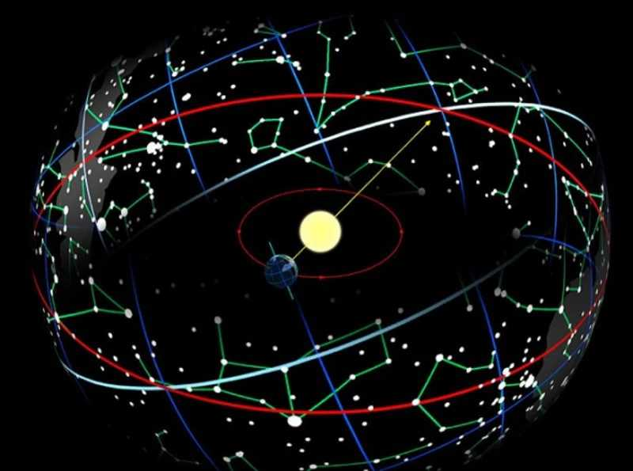

Круг, по которому происходит видимое годичное движение Солнца, называют эклиптикой.
«Движется» Солнце на фоне Зодиака – небесного пояса, в чьих пределах перемещаются планеты, Луна, Раху и Кету.
Зодиак условно делят на 12 равных частей – т.н. знаков, получивших имена в честь реальных созвездий.

Если принять за точку отсчета, 0° Овна, точку эклиптики, в которой Солнце находится в момент весеннего равноденствия, мы получим тропический Зодиак «западной», «классической» астрологии.
Если привязать Зодиак к неподвижным звездам, получится сидерический Зодиак джйотиша.
Точка равноденствия постоянно смещается относительно неподвижных звезд – тропический Зодиак смещается относительного сидерического. Разошлись уже больше, чем на пол-знака – первая причина того, почему «западник» назовет вас, скажем, Девой, а джйотиши – Львом. Второй причиной будет разница мнений по вопросу, чтО в человеке определяет его и какие астрологические факторы с этим связаны.
С точки зрения джйотиша, каждый из нас, по сути, – вечный, исполненный знания и блаженства Атман, частица Абсолютного сознания – но оно запредельно грахам, «проводникам» кармы, гороскоп же именно о ней – к Атману не применим.
Объективно, жизнью большинства руководит «двигатель кармы» эго (ахамкара) – то, что обеспечивает самоидентификацию с поступками, качествами и т.д., наделяет индивидуальностью.
В общем, за основу рабочей модели человека индийские астрологи взяли эго и соотнесли его и продуцируемую им индивидуальность со знаком Зодиака, находящимся в момент рождения на востоке. Знак этот – «ваш знак» в системе джйотиша – называют восходящим, асцендентом или лагной.
Лагна отражает базовый архетип, энерготип, который все остальные показатели натальной карты дополняют и модифицируют; «фильтр», через который вы с миром взаимодействуете, воспринимаете друг друга. Кроме того, лагна характеризует тело, отождествление с ним – одно из самых сильных.
Следующее по значимости – все, что связано с Луной. Луна символизирует ум (манас), эмоции, память, интуицию, подсознание, воображение, мать.
На третьем месте Солнце – самость, «я», лидерские качества, жизненные силы, отец.
Солнце указывает на то, что или кто позволяет, помогает почувствовать Атман, либо на то, какую часть себя человек за него принимает, с ним связывает: «в глубине души / на самом деле я такой-то». Если Атман – Свет, то Солнце – отсвет.
В одном знаке оно проводит почти месяц, Луна – около 2,5 дней. Лагна меняется каждые два часа, а то и чаще.
В системе «знак зодиака равен дому гороскопа» «лагна» является синонимом понятия «первый дом» (дом личности).
Дома, как и знаки, – результат деления небесной сферы на 12 частей, но в отличие от знаков дома статичны, привязаны к местности. Вращаясь относительно Земли, знаки «попадают» в них (вместе с планетами и пр.).
Дома символизируют различные сферы внешней и внутренней жизни (подробнее тут). Заданное асцендентом распределение знаков по ним рисует возможные события, возможную судьбу, поэтому правильное определение лагны так важно.
Каждая граха, за исключением Солнца и Луны, управляет двумя знаками и получает во владение два дома, соответственно. Все, что происходит с хозяином, сказывается на его собственности.
Друг с другом грахи дружат, враждуют или поддерживают нейтралитет; в каких-то домах и знаках им комфортнее – там они сильнее – в каких-то менее комфортно (ослабляющий фактор). Как правило, сильные, хорошо расположенные грахи больше склонны «творить добро». Максимум влияния граха оказывает там, где она находится, в меньшей степени – там, куда она «смотрит». «Взгляд» – на санскрите «дришти» – называют также аспектом. За исключением «незрячего» Кету все аспектируют дом, знак и грахи напротив. Некоторые обладают «боковым зрением»: Марс дополнительно аспектирует 4-й и 8-й дом от себя, Сатурн – 3-й, 10-й, Раху с Юпитером – 5-й, 9-й.
Несколько книг для тех, кто хочет знать больше:
- «Джйотиш. Введение в индийскую астрологию» Х. Дефау и Р. Свободы;
- «Как договориться со Вселенной, или О влиянии планет на судьбу и здоровье человека» Р. Блекта;
- «Астрология провидцев» Д. Фроули.


- Омкарнатх
- (Осинская Ольга)
- +7 (926) 05 007 85
- omkarnath@9planets.ru
Записаться
Cтатьи
-

Лайфхак для затмений: 6 осей зодиака
Трактовать затмения в личных целях – легко! Вы можете сами определять важнейшие потенциальные проблемы и ставить задачи по их предупреждению. Надо всего лишь… запомнить ключевые характеристики осей зодиака. А теперь по порядку)
-

Видео "Сатурн вокруг нас"
Приложения